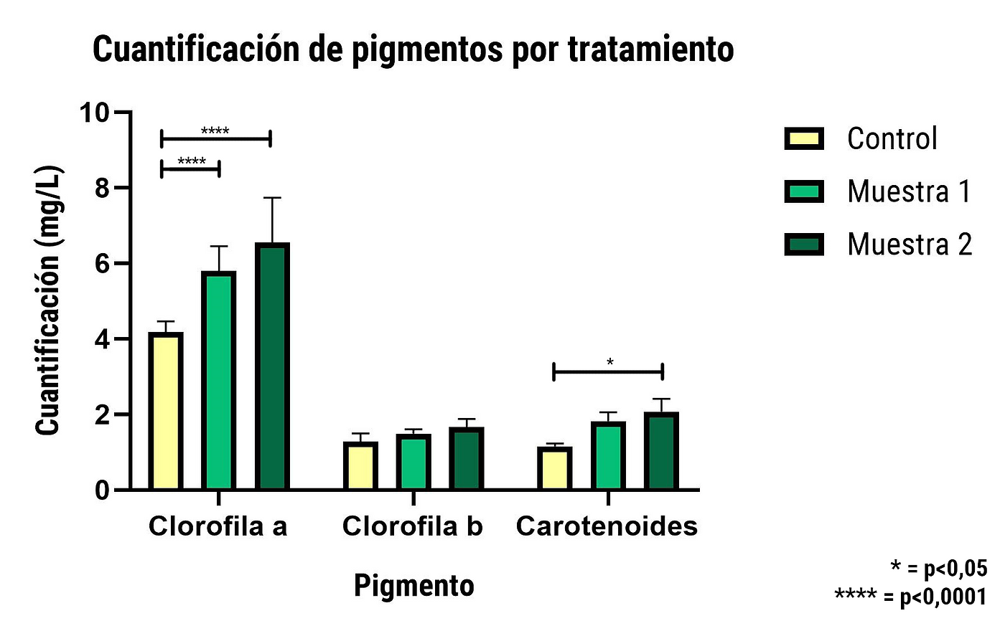

Nanoforte mejora el potencial hídrico de la planta, aumenta la biomasa y la producción, y opera con un 40% menos de agua. Bacterias extremófilas y nanoburbujas de oxígeno al servicio de tu cultivo.
Nanoforte combina microorganismos extremófilos, oxígeno y biopolímeros para que el cultivo aproveche mejor cada gota.
Microorganismos aislados de la Antártica y el Desierto de Atacama, adaptados a sobrevivir con muy poca agua y resistir la sequía.
Mejoran la oxigenación de la raíz y la eficiencia en el uso del agua, para que la planta absorba más con menos.
Más floración, mejor cuaja y mayor rendimiento por hectárea, usando menos recursos hídricos en cada temporada.

Nanoforte aumenta la producción entre un 15 y 20% mientras opera con un 40% menos de agua. Una ventaja clave para zonas afectadas por la escasez hídrica.
Es compatible con cultivos resistentes a la sequía y ayuda a mantener el rendimiento incluso cuando el agua disponible es limitada.
Ver casos de éxito →Dosis, pH, compatibilidad y métodos de aplicación (drone, turbo, riego diluido). El documento más importante para aplicar bien el producto y proteger tu inversión.
Déjanos tus datos y un asesor te contacta para armar la dosis ideal para tu cultivo.
Compra Nanoforte en línea o conversa con nuestro equipo para armar la dosis ideal.